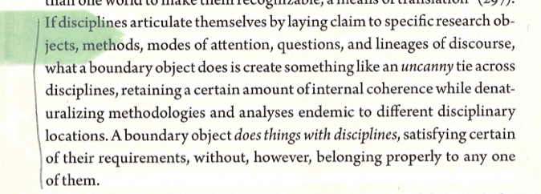

How might geographic knowledge generated through everyday spatial practices be rendered public without being flattened, georeferenced, or vectorized?
Roberts, Les. Spatial Anthropology: Excursions in Liminal Space. Rowman and Littlefield, 2018.
"multimedia rhizomatic assemblage" --> cite my notebook idea --> digital space making --> If any map - akin to that by D &G → a rhizomatic form akin to the interconnectedness of physical and conceptual topoi which have lured me to disoriented discovery.
negative-spaces.github.io and its constitutive repository (per)form the output of my master's thesis in geography. Taken together, the web-field-site of my thesis output marks a praxis of interference while being itself the articulation of interference as praxis. So far, the pages of negative-spaces.github.io have introduced my practice of deep mapping and conveyed my theorization of deep mapping as generated through my practice.
This page articulates how my theorization of deep mapping––constituted through my practice of deep mapping––is enacted in both the form and formation of negative-spaces.github.io.
[further breakdown arc of progression]
FORM SITE
negative-spaces.github.io is itself a webbed field for deep mapping, a space for nonlinear exploration following ideas that grasp and pull the visitor. Until now, I have used this address to invoke the entire site. However, pasting this link into a web browser will bring you to an initial entry point only. My argument unfolds across multiple pages, each page connecting to a multiplicity of others via hyperlinks. Multimedia, rather than being relegated to an appendix, are integrated directly with text. Indeed, Cliffard McLucas (2000) said that renderings from deep mapping “will be genuinely multimedia, not as an aesthetic gesture or affectation, but as a practical necessity."
Digital form allows me to build for a variety of creative syncretisms such as parataxis (placing things side by side; a flat ontology where nothing is subordinated), montage (juxtaposition of disparate elements; connections implied by spatial contiguity), and commonplacing (an arrangement of resonant quotes; a literary topos) (Cresswell 2019, 1-20).
[Elaborate on the different pages and what theyre doing!!! Like practice.]
My use of Github as a host platform was inspired by sultanazana.github.io, whose “network of webpages will grow more tangled with time.” Conventionally used for managing code development for software projects, I chose Github as my host platform because it renders visible the iterative process of formation. github.com/negative-spaces/negative-spaces.github.io, the repository, contains the html documents which, once read by web browsers, comprise what’s read by browsers of this web-site. Each page of negative-spaces.github.io includes a link to its constitutive html document. In this way, process is embedded within the elements of product.
FORMATION TACTICS
[elaborate on all of this]
I know how to make web maps, wield GIS, and construct cartesian cartographies. What I didn’t know a year ago was how I would render a geography in process and of process without tracing out my practice in a linear text.pdf. Tactics are methods whose validity is measured by their applicability to the situation at hand (de Certeau 1984). Appropriate use of tactics therefore depends on practical, experiential knowledge gleaned through everyday navigations of terrains physical, conceptual, and digital. In both field-research and site-creation I employ tactics of bricolage––the poetics of making do with what tools, skills, and materials are already around (Roberts 2018a). For example, instead of learning everything about coding and styling webpages before building my web-site, I teach myself what I need as I go, often gleaning (copypasting) snippets of open source code (as is custom) that are relevant to what I am attempting in the moment. Moreover, I picked up knowledge of git and Github through my job in GIS at the university library. Mapping deeply cultivates an awareness of what is around, gleaning information that may become useful later on.
SPATIALITY OF GIT? Discuss use of git version control software and diffractions.
Workflows
Gleaning from myself
RENDERING INTERFERENCE
Making space for deep mapping is twofold: there is the form and formation of the web-field-site followed by its formal submission, acceptance, publication, and archival by cIRcle, the platform contracted by the university to publish graduate theses and dissertations. As it stands, the institution has never published an interactive digital site as a thesis and the platform is not configured to upload or archive such a format. Therefore, I am currently engaged in dialogue with the representatives from the university’s Graduate School, Library archivists, and cIRcle platform engineers to negotiate the formal technicalities of rendering legible (to the sociotechnical system of institutional publication) a web-field-site as thesis. While the form and formation of negative-spaces.github.io and constitutive repository articulate a practice of interference, rendering negative spaces visible from within the institution through publication as thesis enacts theory as praxis by reconfiguring “what gets to count as a valid object and method, within which disciplinary framework, where, when, and how" (Loveless 2019, 70).
[voice memo mid june 2023 - drive up to penticton]
Okay, go. Okay, so it's less about the specific output form of my website and more about the process of interfering with the circle system from within by proposing this and then going through the process of having these meetings in which I reveal sort of, like, their boundary or their like, limit to what is legible by pushing this pushing that or, you know, retreating, and it's revealing, like, yeah, where the boundary is through, like when they say yes to something or no to something or asked me to change something. And then I get a question, like, why is this this way, and I and I get to find out about how they delimit a legible output in a way that you wouldn't if you got an ethics review, and then you ask them to, you know, just send you an email about this stuff. It's not stuff they put on the website, it's sort of like, the covert covert ethnography of going under cover. But while it's through the practice of proposing to do something, even though I don't even actually know what it's going to end up being but it's about, it's about the form of it. And then going through that process and in the process, revealing more about the system and how it coheres its formations of intelligibility. And again, not I'm not opposing it, but interfering from within. Interference is iterative acts, right? It's in the act of initiating meetings not the act of saying that I'm going to do this differently? Or, you know, similarly, it isn't the act of like speaking out in opposition but engaging in dialogue. And creating those conversations. If it were an opposition I would just create something and then submit it, you know, and afterwords have to fight to justify my actions. Likely need to retrofit my work to fit their normal. But it's got to be a negotiation if you're from within. The interference isn't one act of output but a process of iterative enactments. Interference is dialogue whose patterns mark the superposition of different intelligibilities. Its not one against another but an intra-action which reveals boundaries by proposing alternative perspectives that open the limit to being reconfigured. Okay, that's good.
THEORY AS PRAXIS
Spell out how thesis - in presentation and digital forms - enacts theory as praxis.
discuss research creation outputs
Research-creation outputs as 'boundary objects' (Bowker and Star 1999)
"A boundary object does things with disciplines, satisfying certain of their requirements, without, however, belonging properly to any one of them" (32)

how mine is actually beyond r-c outputs of creative element and text
Certeau, Michel de. The Practice of Everyday Life. Translated by Steven Rendall. Berkeley: University of California Press, 1984.
Cresswell, Tim. “Writing Place.” In Maxwell Street: Writing and Thinking Place, 1–20. University of Chicago Press, 2019.